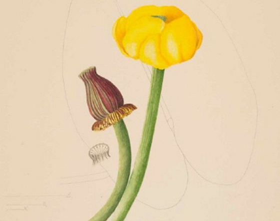

Bullhead pond lily, from “Plants and Flowers of Maine: Kate Furbish’s Watercolors”.3
Our project focuses on the dataset created from Bowdoin's collection of Kate Furbish's botanitcal drawings. Kate Furbish was a botanist from Brunswick, Maine.1 She lived from 1834 to 1931, where she traveled around Maine collecting samples and cataloging hundreds of the flora in Maine.2 Her dilligent, prolific cataloging of the flora of Maine while defying gender norms of her time marks Furbish as one of the unsung heros of botany. Her work is now largely curated at Bowdoin College, and can be seen on dipslay in Hawthorne-Longfellow Library. Our project uses a dataset that holds information on each sample in her catalogues, such as:
Location of where the sample was found
Year that the sample was found
Common and scientific labels (current and at time of discovery)
Is there a way we can evaluate by genus instead of species?
Where in the collection is this flower (regarding page and volume number)?
Questions That Our Visualization Can Answer and How It Answers These Questions
Where did she go and when?
This can be seen through the year slider and the dots on the map. You can see where she went and when by adjusting the slider to a period of time (in years) that interests you and seeing the location and size of the dots. The locations of the dots illustrate which town(s) that samples were collected in during that time period, and the size of the dot will indicate the number of samples she collected at that specific town during the time period.
Where are certain flora located?
This can be seen when you search and select a set of flora from the flora search box, as corresponding dots will appear on the map of Maine indicating that Kate Furbish found these flora at these locations.
Where in the collection is this flora (regarding page and volume number)?
This information will appear in the town inspector box. When you select to visualize a certain number of flora and click on a specific town, the volume and page number of each respective flora sample will be shown in the town inspector box.
Where did she find the most flora?
This can be seen by selecting all flora and comparing the size of the respective dots on the map. As already explained above, when you select a set of flora from the flora search box, dots will appear on the map of Maine indicating that Kate Furbish found these flora at these locations. The size of these dots indicate how many samples of the selected flora she found at those specific locations.
What were her most active years?
This can be seen by selecting all flora samples, then adjusting the slider to display each year's work seperately. The user can then easily compare year intervals independently of chronological order.
Is there a way we can evaluate for genus instead of species?
Yes, the search dialog shows the results of a search for any part of a scientific or common name, which easily affords a search through either lens. The user can then select all genus members and show the results on the map.
Footnotes
1. "Kate Furbish Collection, 1873- , N.d. (bulk 1873-1909) (Bowdoin." Library George J. Mitchell Department of Special Collections & Archives. N.p., n.d. Web. 13 Nov. 2016. ↩ 2. "Kate Furbish Collection, 1873- , N.d. (bulk 1873-1909) (Bowdoin." Library George J. Mitchell Department of Special Collections & Archives. N.p., n.d. Web. 13 Nov. 2016. ↩